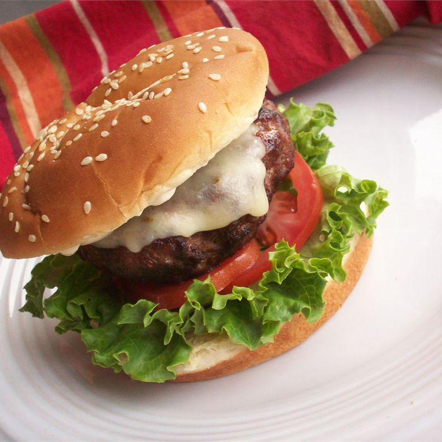

Burger recipe

A burger typically consists of a grilled patty made from ground meat, usually beef, placed inside a sliced bun.
It can be topped with various ingredients like cheese, lettuce,
tomato, onion, and condiments such as ketchup and mustard, making it a popular and versatile meal option.
Ingredients
- 2 pounds extra-lean ground beef
- 1 (1 ounce) package dry onion soup mix
- 1 egg, lightly beaten
- 2 teaspoons hot pepper sauce
- 2 teaspoons Worcestershire sauce
- ¼ teaspoon ground black pepper
- ¾ cup rolled oats
Steps
- Preheat an outdoor grill for medium high heat and lightly oil grate
- In a large bowl, combine the beef, onion soup mix, egg, hot sauce and oats
- Shape into 6 patties.
- Grill patties over medium high heat for 10 to 20 minutes, or to desired doneness.
Homepage